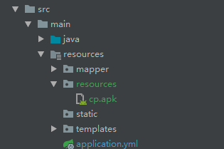

问题：以前，我们在使用SSM框架的时候，都是通过外置的tomcat进行部署，如果想访问文件，直接拖到项目的根目录下面即可。假如我们需要放一个apk文件，然后让别人下载，只需将apk放到项目根目录下面，浏览器通过http://ip:port/projectName/xx.apk即可下载。现在使用spring boot进行项目开发，由于springboot 内嵌了tomcat，为了方便部署，因此我们大多数情况下只需将项目打成jar包运行。这样就存在一个问题，我们该如何将这个apk放到服务器上，别人通过浏览器进行下载呢？
一、springboot的项目结构
|———main |———java———代码
|———src | |
| | |
| | |———resources———静态资源配置
project | |———test
|———pom.xml
二、打成jar包后的结构
|———META-INF
| |——lib
project | |
|———BOOT-INF|
|——classes——（项目结构java下面的class文件和resources下面的文件）三、classpath指的是哪儿
classpath顾名思义，就是class的路径，打包前指的就是resources，打包后指的就是classes。
四、apk文件放在哪儿打包部署后可以正常访问
springboot配置文件为我们提供了默认的静态资源访问路径，当然我们也可以进行修改。默认的路径为下面这四个地址，当我们想访问静态资源的时候会从上往下一个地址接一个地址的去找：
{
"classpath:/META-INF/resources/",
"classpath:/resources/",
"classpath:/static/",
"classpath:/public/"
};如果想要自定义的话，则在application.properties中设置
spring.resources.static-locations=自定义路径我们把apk放到以上任意一个文件夹中都可以正常访问到。我最常做的是在resources下面建一个resources的文件夹，然后用http://ip:port/projectName/xx.apk去访问。如下图所示

这样我们就能轻松实现浏览器访问jar中的静态资源了，而不用安装tomcat，用war包的形式去运行项目咯。